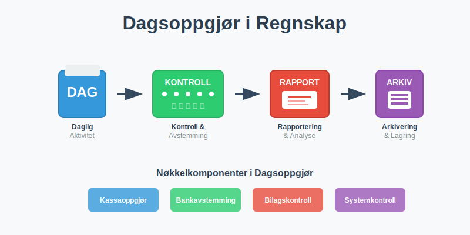
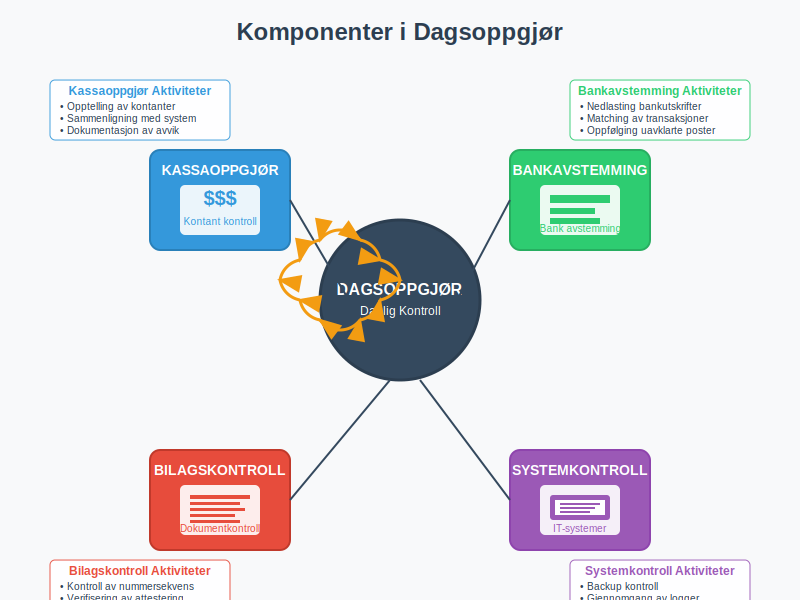
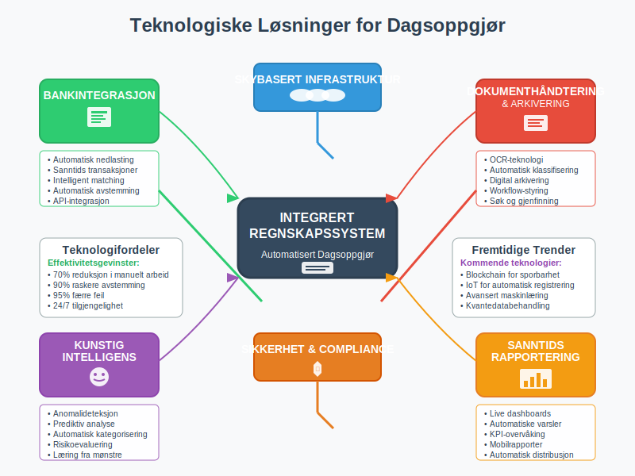

Dagsoppgjør er en daglig regnskapsprosess som sikrer at alle transaksjoner er korrekt registrert, avstemt og kontrollert ved slutten av hver arbeidsdag. Dette er en kritisk kontrollrutine som danner grunnlaget for pålitelig regnskapsføring og finansiell rapportering.

Hva er Dagsoppgjør?
Dagsoppgjør er en systematisk gjennomgang av alle regnskapsmessige aktiviteter som har funnet sted i løpet av en arbeidsdag. Prosessen sikrer at:
- Alle transaksjoner er korrekt registrert i regnskapssystemet
- Kassabeholdning stemmer overens med registrerte bevegelser
- Banktransaksjoner er avstemt og kontrollert
- Bilag og dokumentasjon er komplett og arkivert
- Avvik og feil identifiseres og korrigeres umiddelbart
- Regnskapsmessig integritet opprettholdes daglig
Formål med Dagsoppgjør
Dagsoppgjør tjener flere kritiske formål i regnskapsarbeidet:
- Kvalitetssikring: Sikrer nøyaktighet i alle regnskapsposter
- Risikostyring: Identifiserer og håndterer avvik før de akkumuleres
- Compliance: Oppfyller krav i bokføringsloven og bokføringsforskriften
- Kontroll: Opprettholder intern kontroll og attestering
- Effektivitet: Forhindrer oppsamling av feil og mangler
Komponenter i Dagsoppgjør
Et komplett dagsoppgjør består av flere integrerte komponenter som må gjennomføres systematisk.

1. Kassaoppgjør
Kassaoppgjør er kontroll av alle kontante transaksjoner og kassabeholdning. Dette er en kritisk del av dagsoppgjøret som krever systematisk tilnærming og grundig dokumentasjon. For en detaljert gjennomgang av hele kasseoppgjørsprosessen, se vår omfattende guide til kasseoppgjør.
Daglig Kassekontroll
- Opptelling av fysisk kontantbeholdning
- Sammenligning med kassarapporter fra systemet
- Registrering av alle inn- og utbetalinger
- Dokumentasjon av kassadifferanser
Kassaoppgjørsskjema
| Element | Beskrivelse | Kontrollpunkt |
|---|---|---|
| Startsaldo | Kassabeholdning ved dagens start | Avstemming mot forrige dag |
| Innbetalinger | Alle kontante innbetalinger | Bilag og kvitteringer |
| Utbetalinger | Alle kontante utbetalinger | Godkjente utbetalingsbilag |
| Sluttsaldo | Beregnet kassabeholdning | Fysisk opptelling |
| Differanse | Avvik mellom beregnet og faktisk | Årsaksanalyse |
2. Bankavstemming
Bankavstemming er en kritisk del av dagsoppgjøret:
Daglig Bankavstemmingsprosess
- Nedlasting av bankutskrifter og transaksjonsdata
- Sammenligning med registrerte banktransaksjoner
- Identifikasjon av ikke-registrerte transaksjoner
- Oppfølging av uavklarte poster
- Registrering av bankgebyrer og renter
3. Bilagskontroll
Systematisk gjennomgang av alle bilag og dokumentasjon:
Bilagskontrollrutiner
- Nummersekvens: Kontroll av at alle bilagsnumre er registrert
- Fullstendighet: Sikre at alle bilag har nødvendig informasjon
- Godkjenning: Verifisere at bilag er korrekt attestert
- Arkivering: Sikre korrekt lagring og tilgjengelighet
4. Systemkontroller
Tekniske kontroller av regnskapssystemet og dataintegriteten:
- Backup-kontroll: Sikre at daglige sikkerhetskopier er tatt
- Systemlogger: Gjennomgang av feilmeldinger og advarsler
- Brukeraktivitet: Kontroll av hvem som har gjort endringer
- Datavalidering: Verifisering av automatiske beregninger
Dagsoppgjørsprosessen
En strukturert tilnærming til dagsoppgjør sikrer at ingen kritiske elementer overses.

Trinn-for-Trinn Prosess
1. Forberedelse (08:00-09:00)
- Samle alle bilag og dokumenter fra dagen
- Organisere transaksjonsdata kronologisk
- Forberede kontrollskjemaer og sjekklister
- Sikre tilgang til alle nødvendige systemer
2. Registrering og Kontroll (09:00-11:00)
- Registrere alle utestående transaksjoner
- Kontrollere at alle poster har korrekte kontoer
- Verifisere beløp og datoer
- Sikre korrekt bilagsføring
3. Avstemming (11:00-12:00)
- Utføre kassaoppgjør og bankavstemming
- Sammenligne systemrapporter med fysiske beholdninger
- Identifisere og analysere avvik
- Dokumentere alle differanser
4. Korrigering og Oppfølging (12:00-13:00)
- Korrigere identifiserte feil umiddelbart
- Følge opp uavklarte poster
- Eskalere komplekse problemer til ledelse
- Dokumentere alle korrigeringer
5. Rapportering og Arkivering (13:00-14:00)
- Generere dagsrapporter og sammendrag
- Arkivere alle bilag og dokumenter
- Oppdatere kontrollregistre og logger
- Forberede informasjon for neste dag
Kontrollpunkter og Sjekklister
Systematiske kontrollpunkter sikrer at dagsoppgjøret er komplett og nøyaktig.
Daglig Sjekkliste for Dagsoppgjør
Finansielle Kontroller
- Kassaoppgjør utført og avstemt
- Bankavstemming gjennomført for alle kontoer
- Kundefordringer oppdatert og kontrollert
- Leverandørgjeld registrert og avstemt
- Mva-beregninger kontrollert og verifisert
Dokumentasjonskontroller
- Alle bilag nummerert og arkivert
- Attestering komplett på alle transaksjoner
- Elektronisk arkivering gjennomført
- Backup av regnskapsdata tatt
- Sikkerhetskopier verifisert og lagret
Systemkontroller
- Regnskapssystem avstemt og balansert
- Automatiske beregninger kontrollert
- Brukerlogger gjennomgått
- Feilmeldinger håndtert og løst
- Systemytelse overvåket og dokumentert
Utfordringer og Løsninger
Vanlige utfordringer i dagsoppgjørsarbeid og hvordan de kan håndteres effektivt.
Typiske Utfordringer
1. Tidspress og Ressursmangel
Problem: Ikke nok tid til grundig dagsoppgjør Løsning:
- Automatisere rutineoppgaver der mulig
- Prioritere kritiske kontrollpunkter
- Delegere oppgaver til kvalifisert personell
- Implementere effektive arbeidsflyter
2. Komplekse Transaksjoner
Problem: Vanskelige eller uvanlige transaksjoner Løsning:
- Etablere klare retningslinjer og prosedyrer
- Opprette eskaleringsrutiner for komplekse saker
- Sikre tilgang til ekspertise og veiledning
- Dokumentere løsninger for fremtidig referanse
3. Systemintegrasjon
Problem: Manglende integrasjon mellom systemer Løsning:
- Investere i integrerte regnskapsløsninger
- Utvikle automatiske dataoverføringer
- Implementere standardiserte formater
- Etablere robuste kontrollrutiner
Beste Praksis for Dagsoppgjør
Organisatoriske Tiltak
- Klare roller og ansvarsområder
- Dokumenterte prosedyrer og arbeidsflyter
- Regelmessig opplæring av personell
- Kontinuerlig forbedring av prosesser
Teknologiske Løsninger
- Automatiserte kontroller og avstemminger
- Integrerte regnskapssystemer og dataflyt
- Elektronisk arkivering og dokumenthåndtering
- Sanntids rapportering og overvåking
Juridiske og Regulatoriske Krav
Dagsoppgjør må oppfylle strenge juridiske krav i henhold til norsk regnskapslovgivning.
Bokføringsloven og Dagsoppgjør
Bokføringsloven stiller spesifikke krav til daglig regnskapsføring:
Lovpålagte Krav
- § 4: Krav til løpende registrering av transaksjoner
- § 5: Dokumentasjon og bilagskrav
- § 6: Oppbevaring og arkivering
- § 13: Internkontroll og kvalitetssikring
Revisjons- og Kontrollhensyn
Revisorer forventer dokumenterte dagsoppgjørsrutiner som del av internkontrollen:
Revisjonsrelevante Elementer
- Dokumenterte prosedyrer for dagsoppgjør
- Sporbarhet i alle transaksjoner og kontroller
- Segregering av oppgaver og ansvar
- Regelmessig overvåking og rapportering
Teknologi og Automatisering
Moderne teknologi kan betydelig forbedre effektiviteten og nøyaktigheten av dagsoppgjør.

Automatiseringsmuligheter
Bankintegrasjon
- Automatisk nedlasting av banktransaksjoner
- Intelligent matching av transaksjoner
- Sanntids bankavstemming
- Automatisk registrering av standardtransaksjoner
Regnskapssystemintegrasjon
- Automatiske journalposter fra andre systemer
- Sanntids oppdatering av kundefordringer
- Automatisk mva-beregning og rapportering
- Integrert bilagshåndtering og arkivering
Fremtidens Dagsoppgjør
Utviklingstrender som vil påvirke dagsoppgjørsarbeid:
- Kunstig intelligens for anomalideteksjon
- Maskinlæring for forbedret matching
- Blockchain for økt sporbarhet
- Sanntids regnskapsføring og rapportering
Måling og KPI-er
Nøkkelindikatorer for å måle effektiviteten av dagsoppgjørsrutiner.
Viktige Måltall
| KPI | Beskrivelse | Målsetting |
|---|---|---|
| Fullføringstid | Tid brukt på dagsoppgjør | < 4 timer |
| Avviksrate | Andel dager med avvik | < 5% |
| Korrigeringstid | Tid til å løse avvik | < 24 timer |
| Automatiseringsgrad | Andel automatiserte kontroller | > 70% |
| Feilrate | Antall feil per 1000 transaksjoner | < 0.1% |
Kontinuerlig Forbedring
Systematisk tilnærming til forbedring av dagsoppgjørsprosesser:
Månedlig Evaluering
- Analyse av KPI-er og trender
- Identifikasjon av forbedringsområder
- Implementering av korrigerende tiltak
- Oppdatering av prosedyrer og retningslinjer
Opplæring og Kompetanse
Kvalifisert personell er avgjørende for effektive dagsoppgjørsrutiner.
Nødvendig Kompetanse
Tekniske Ferdigheter
- Regnskapskunnskap og forståelse av bokføringsregler
- Systemkompetanse i relevante regnskapssystemer
- Analytiske ferdigheter for avviksanalyse
- Detaljorientering og nøyaktighet
Prosessferdigheter
- Tidsplanlegging og prioritering
- Problemløsning og beslutningsevne
- Kommunikasjon og rapportering
- Kontinuerlig læring og tilpasning
Opplæringsprogram
Strukturert opplæring sikrer konsistent kvalitet i dagsoppgjørsarbeid:
Grunnleggende Opplæring
- Regnskapsprinsipper og lovkrav
- Systemopplæring og praktisk bruk
- Prosedyrer og arbeidsflyter
- Kvalitetskontroll og feilhåndtering
Kontinuerlig Utvikling
- Regelmessige kurs og oppdateringer
- Erfaringsdeling og beste praksis
- Teknologioppdateringer og nye verktøy
- Sertifisering og kompetansebevis
Konklusjon
Dagsoppgjør er en fundamental regnskapsprosess som sikrer kvalitet, nøyaktighet og compliance i den daglige regnskapsføringen. Gjennom systematiske rutiner, effektive kontroller og moderne teknologi kan organisasjoner opprettholde høy standard i sitt regnskapsarbeid.
Suksessfulle dagsoppgjørsrutiner krever:
- Klare prosedyrer og ansvarsfordeling
- Kvalifisert personell med riktig kompetanse
- Effektive systemer og teknologiske løsninger
- Kontinuerlig forbedring og tilpasning
- Sterkt fokus på kvalitet og compliance
Ved å implementere robuste dagsoppgjørsrutiner legger organisasjoner grunnlaget for pålitelig finansiell rapportering, effektiv internkontroll og trygg regnskapsføring som oppfyller alle juridiske og profesjonelle standarder.